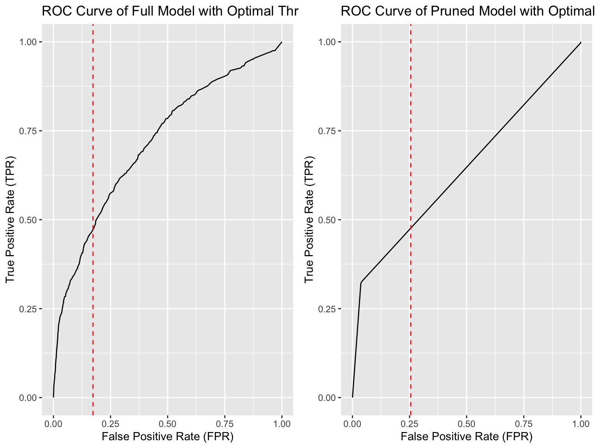
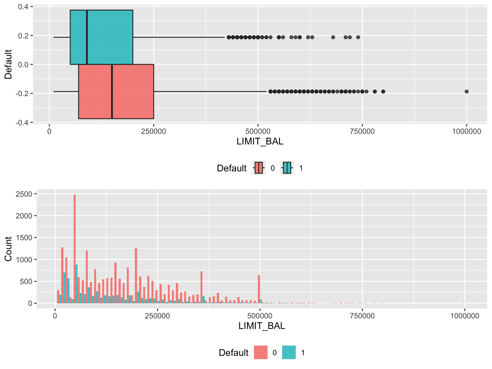

Chapter 2 Exploratory Data Analysis
2.1 The Structure of Dataset
We should find out the type and amount of unique values in each column of the dataset. Basing on the type of columns and the amount of unique value, we can identify which variables are numerical and categorical.
## Type Unique_Value_Amount
## ID character 30000
## LIMIT_BAL numeric 81
## SEX character 2
## EDUCATION character 7
## MARRIAGE character 4
## AGE numeric 56
## PAY_0 numeric 11
## PAY_2 numeric 11
## PAY_3 numeric 11
## PAY_4 numeric 11
## PAY_5 numeric 10
## PAY_6 numeric 10
## BILL_AMT1 numeric 22723
## BILL_AMT2 numeric 22346
## BILL_AMT3 numeric 22026
## BILL_AMT4 numeric 21548
## BILL_AMT5 numeric 21010
## BILL_AMT6 numeric 20604
## PAY_AMT1 numeric 7943
## PAY_AMT2 numeric 7899
## PAY_AMT3 numeric 7518
## PAY_AMT4 numeric 6937
## PAY_AMT5 numeric 6897
## PAY_AMT6 numeric 6939
## Default character 22.1.1 Data Identification
From the data frame above, we can find “SEX”, “EDUCATION” and “MARRIAGE” have character value and “PAY_0”, “PAY_2”, “PAY_3”, “PAY_4”, “PAY_5”, “PAY_6” have numerical value but little unique value amount. Combined with the data description, we can recognize the above variables as categorical variables. To the rest variables except “ID” and “Default”, we will treat them as numerical variable. “ID” will be dropped because it have unique value for each row which it will not provide any information for prediction. “Default” is the label.
2.1.2 Feature Problem Detection
There is a naming error because there is no variable named
PAY_0in the data description and missing the variable namedPAY_1.The data description states that unique values of variables
PAY_1toPAY_6should be -1, 1, 2, 3, 4, 5, 6, 7, 8, 9, which means the maxium of unique variable amount is 11. However, the unique value amount ofPAY_1toPAY_4concluded above are all 11. Then we check the unique value of variablePAY_1toPAY_6, we can find that there are two extra value “-2” and “0” which is not defined in data description.
## $PAY_1
## [1] 2 -1 0 -2 1 3 4 8 7 5 6
##
## $PAY_2
## [1] 2 0 -1 -2 3 5 7 4 1 6 8
##
## $PAY_3
## [1] -1 0 2 -2 3 4 6 7 1 5 8
##
## $PAY_4
## [1] -1 0 -2 2 3 4 5 7 6 1 8
##
## $PAY_5
## [1] -2 0 -1 2 3 5 4 7 8 6
##
## $PAY_6
## [1] -2 2 0 -1 3 6 4 7 8 5- Similar with variable
PAY_1toPAY_6, variableEDUCATIONshould only have 4 but actually 7 in Structure data frame above. By checking the unique value of variableEDUCATION, we find there are 3 extra value 0, 5, 6.
## [1] "2" "1" "3" "5" "4" "6" "0"- Similar with variable
EDUCATION, variableEDUCATIONshould only have 3 but actually 4 in Structure data frame above. By checking the unique value of variableEDUCATION, we find there is extra value 0.
## [1] "1" "2" "3" "0"2.2 Data Visualization & Analysis
2.2.1 Label: Default of credit card

- 77.88% of the observations in the data set belong to the non-default group (Default = 0).
- 22.12% of the observations in the data set belong to the default group (Default = 1).
- There are 23,364 observations in the non-default class and only 6,636 observations in the default class, which is a large difference in the number of observations, indicating a class imbalance.
2.2.2 Categorical Variable
The data analysis of categorical variable is aiming to explore the relationship between the selected variable and the Default variable in a dataset. By grouping the data by these two variables and calculating the percentage of observations in each group, we can see how the percentage of defaults differs between males and females.
Moreover, the chi-squared test is used to determine whether there is a significant association between Default and categorical feature.
2.2.2.1 SEX
We firstly notice that the distribution of Default status is different between Male and Female, which indicates that there may be a difference in the proportion of males and females who default on their financial obligations.
However, gender is a sensitive attribute and we should find more significant evidence to make a conclusion.
##
## Pearson's Chi-squared test with Yates' continuity correction
##
## data: cont_table
## X-squared = 47.709, df = 1, p-value = 4.945e-12\(H_0:\) There is no significant association between the categorical variable SEX and Default.
\(H_a:\) There is significant association between the categorical variable SEX and Default.
- Given the Chi-Squared Test above, since the p-value is smaller than the common significance level of 0.05, we can reject the null hypothesis (\(H_0\)) at the 5% level of significance. This means that we do have sufficient evidence to conclude that there is a significant association between
SEXandDefault.
2.2.2.2 EDUCATION

Because the value of
EDUCATIONdefined in data description are only 1, 2, 3, and the proportion of undefined value is smaller enough (<0.1%), we can ignore the information from the undefined value.The plot shows that the distribution of Default status is different between Education levels and revels a trend that the clients who have higher Education level will has lower possibility to default because there is lower proportion of default clients in the group of clients who has higher Education level.
##
## Pearson's Chi-squared test
##
## data: cont_table
## X-squared = 97, df = 2, p-value < 2.2e-16\(H_0:\) There is no significant association between the categorical variable EDUCATION and Default.
\(H_a:\) There is significant association between the categorical variable EDUCATION and Default.
- Given the Chi-Squared Test above, since the p-value is smaller than the common significance level of 0.05, we can reject the null hypothesis (\(H_0\)) at the 5% level of significance. This means that we do have sufficient evidence to conclude that there is a significant association between
EDUCATIONandDefault.
2.2.2.3 MARRIAGE
Because the value of
MARRIAGEdefined in data description are only 1, 2, 3, and the proportion of undefined value is smaller enough (<0.3%), we can ignore the information from the undefined value.The plot shows that the distribution of Default status is different between MARRIAGE levels
##
## Pearson's Chi-squared test
##
## data: cont_table
## X-squared = 30.446, df = 2, p-value = 2.448e-07\(H_0:\) There is no significant association between the categorical variable MARRIAGE and Default.
\(H_a:\) There is significant association between the categorical variable MARRIAGE and Default.
- Given the Chi-Squared Test above, since the p-value is smaller than the common significance level of 0.05, we can reject the null hypothesis (\(H_0\)) at the 5% level of significance. This means that we do have sufficient evidence to conclude that there is a significant association between
MARRIAGEandDefault.
2.2.3 Numerical Variable
The data analysis of numerical variable will focus on the distribution, statistics and inter-correlation between each numerical variable.
2.2.3.1 Amount of the given credit

##
## Welch Two Sample t-test
##
## data: LIMIT_BAL by Default
## t = 28.952, df = 11982, p-value < 2.2e-16
## alternative hypothesis: true difference in means between group 0 and group 1 is not equal to 0
## 95 percent confidence interval:
## 44740.91 51239.23
## sample estimates:
## mean in group 0 mean in group 1
## 178099.7 130109.7- The
LIMIT_BALdistribution of default and non-default are similar, both of them are right-skewed and have extreme outlier. - However, the mean of limited balance are differen t in two group, which indicates that non-default clients generally have higher limited balance than default clients.
- The statistics of them has great difference such as the mean and outlier of non-default is greater than default’s.
- From the result of T-Test whose null hypothesis is there is no difference between the Default’s credit limit mean and Non-Default’s credit limit mean, the p value is smaller than 2.2e-16 and consequently we have sigenificant evidence to reject the null hypothesis.
2.2.3.2 AGE
##
## Welch Two Sample t-test
##
## data: AGE by Default
## t = -2.3195, df = 10173, p-value = 0.02039
## alternative hypothesis: true difference in means between group 0 and group 1 is not equal to 0
## 95 percent confidence interval:
## -0.56915863 -0.04778641
## sample estimates:
## mean in group 0 mean in group 1
## 35.41727 35.72574- The distribution of Age of default and non-default clients are slightly different which is that default clients has more average proportion in each age but non-default clients’ age are more centered, but both of distribution are right-skewed.
- However, the boxplot indicates that both of two kinds of clients have similar average age and have extreme outlier. – From the result of T-Test whose null hypothesis is there is no difference between the Default’s Age mean and Non-Default’s Age mean, the p value is 0.02039 and consequently we have sigenificant evidence to reject the null hypothesis under the significant level 0.05.
2.2.3.3 Amount of bill statement
By comparing the six graphs, it can be seen that the amount of bills has fluctuated significantly in the past six months for both credit card defaulters and credit card defaulters.
However, there is no significant difference in bill statement amount between credit card defaulters and credit card defaulters. The bill statement amount distribution of two kinds of clients are both right-skewed in all of the past 6 months.
Because the bill statement amount of each month can show clients’ spending behavior which means the bill statement might be inter-correlated.
From the corrplot, it can be said that all of 6 variable are highly inter-correlated because there correlation are all greater than 0.8
The correlation level decreases when time period gap is greater, which indicates than the next month bill statement amount is most correlated with current bill statement amount.
2.2.3.4 Amount of Payment
By comparing the six graphs, we can observe that the amount of payment all gather in 0 with some extreme outlier in the past six months for both credit card defaulters and credit card defaulters.
However, there is no significant difference in bill payment amount between credit card defaulters and credit card defaulters
Because the bill payment amount of each month can show clients’ spending behavior which means the bill payment might be inter-correlated.
From the corrplot, it can be said that all of 6 variable are less inter-correlated because there correlation are all smaller than 0.3
The correlation level decreases when time period gap is greater, which indicates than the next month bill payment amount is most correlated with current bill payment amount.